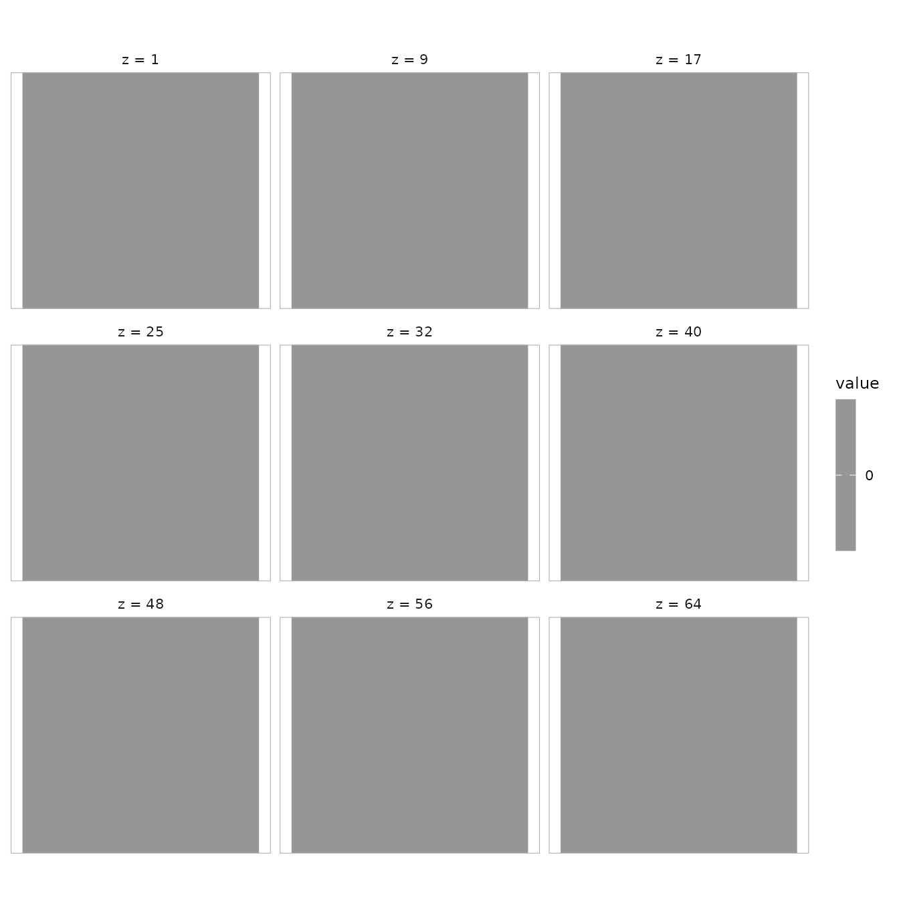

This article is now the detailed follow-on to
vignette("VolumesAndVectors"). Read that vignette first if
you want the shortest introduction to read_vol(),
read_vec(), and the basic NeuroVol /
NeuroVec mental model.
Use this article when you specifically want deeper 3D-volume details: masks, coordinate conversion, manual construction, and slice-level inspection.
Read one volume to establish context
file_name <- system.file("extdata", "global_mask2.nii.gz", package = "neuroim2")
vol <- read_vol(file_name)This article assumes you already know the basic NeuroVol
story from vignette("VolumesAndVectors"). The remaining
sections focus on patterns that are specific to 3D work.
Coordinate conversion and spatial metadata
sp <- space(vol)
sp
#> <NeuroSpace> [3D]
#> ── Geometry ────────────────────────────────────────────────────────────────────
#> Dimensions : 64 x 64 x 25
#> Spacing : 3.5 x 3.5 x 3.7 mm
#> Origin : 112, -108.5, -46.25
#> Orientation : LAS
#> Voxels : 102,400
dim(vol)
#> [1] 64 64 25
spacing(vol)
#> [1] 3.5 3.5 3.7
origin(vol)
#> [1] 112.00 -108.50 -46.25You can convert between indices, voxel grid coordinates, and real-world coordinates:
idx <- 1:5
g <- index_to_grid(vol, idx)
w <- index_to_coord(vol, idx)
idx2 <- coord_to_index(vol, w)
all.equal(idx, idx2)
#> [1] "Mean relative difference: 0.3333333"A numeric image volume can be converted to a binary image as follows:
vol2 <- as.logical(vol)
class(vol2)
#> [1] "LogicalNeuroVol"
#> attr(,"package")
#> [1] "neuroim2"
print(vol2[1, 1, 1])
#> [1] FALSEMasks and LogicalNeuroVol
Create a mask from a threshold or an explicit set of indices. Masks
are LogicalNeuroVol and align with the 3D space.
mask1 <- as.mask(vol > 0.5)
mask1
#> <DenseNeuroVol> [406.6 Kb]
#> ── Spatial ─────────────────────────────────────────────────────────────────────
#> Dimensions : 64 x 64 x 25
#> Spacing : 3.5 x 3.5 x 3.7 mm
#> Origin : 112, -108.5, -46.25
#> Orientation : LAS
#> ── Data ────────────────────────────────────────────────────────────────────────
#> Range : [0.000, 1.000]
idx_hi <- which(vol > 0.8)
mask2 <- as.mask(vol, idx_hi)
sum(mask2) == length(idx_hi)
#> [1] TRUE
mean_in_mask <- mean(vol[mask1@.Data])
mean_in_mask
#> [1] 1Constructing volumes manually
We can also create a NeuroVol instance from an
array or numeric vector. First we construct a
standard R array:
Now we create a NeuroSpace instance that describes the
geometry of the image, including at minimum its dimensions and voxel
spacing.
bspace <- NeuroSpace(dim=c(64,64,64), spacing=c(1,1,1))
vol <- NeuroVol(x, bspace)
vol
#> <DenseNeuroVol> [2 Mb]
#> ── Spatial ─────────────────────────────────────────────────────────────────────
#> Dimensions : 64 x 64 x 64
#> Spacing : 1 x 1 x 1 mm
#> Origin : 0, 0, 0
#> Orientation : RAS
#> ── Data ────────────────────────────────────────────────────────────────────────
#> Range : [0.000, 0.000]We do not usually have to create NeuroSpace objects by
hand because real image files carry this information in their headers.
In practice you usually copy an existing space:
Slicing and quick visualization
The easiest way to view a volume is with plot(), which
shows a 3 x 3 montage of evenly-spaced axial slices:
plot(vol)
Default plot() montage
You can also extract a single 2D slice for display using standard array indexing:
Mid-slice of example volume
Reorienting and resampling
You can change an image’s orientation and voxel spacing. Use
reorient() to remap axes (e.g., to RAS) and
resample_to() to match a target space.
# Reorient the space (LPI -> RAS) and compare coordinate mappings
sp_lpi <- space(vol)
sp_ras <- reorient(sp_lpi, c("R","A","S"))
g <- t(matrix(c(10, 10, 10)))
world_lpi <- grid_to_coord(sp_lpi, g)
world_ras <- grid_to_coord(sp_ras, g)
# world_lpi and world_ras differ due to axis remappingResample to a new spacing or match a target
NeuroSpace:
# Create a target space with 2x finer resolution
sp <- space(vol)
sp2 <- NeuroSpace(sp@dim * c(2,2,2), sp@spacing/2, origin=sp@origin, trans=trans(vol))
# Resample (trilinear)
vol_resamp <- resample_to(vol, sp2, method = "linear")
dim(vol_resamp)Downsampling
Reduce spatial resolution to speed up downstream operations.
# Downsample by target spacing
vol_ds1 <- downsample(vol, spacing = spacing(vol)[1:3] * 2)
dim(vol_ds1)
#> [1] 32 32 32
# Or by factor
vol_ds2 <- downsample(vol, factor = 0.5)
dim(vol_ds2)
#> [1] 32 32 32Writing a NIFTI formatted image volume
When we’re ready to write an image volume to disk, we use
write_vol
write_vol(vol2, "output.nii")
## adding a '.gz' extension results ina gzipped file.
write_vol(vol2, "output.nii.gz")You can also write to a temporary file during workflows:
tmp <- tempfile(fileext = ".nii.gz")
write_vol(vol2, tmp)
file.exists(tmp)
#> [1] TRUE
unlink(tmp)For reorientation, resampling, and downsampling, use
vignette("Resampling"), which now owns that topic
directly.